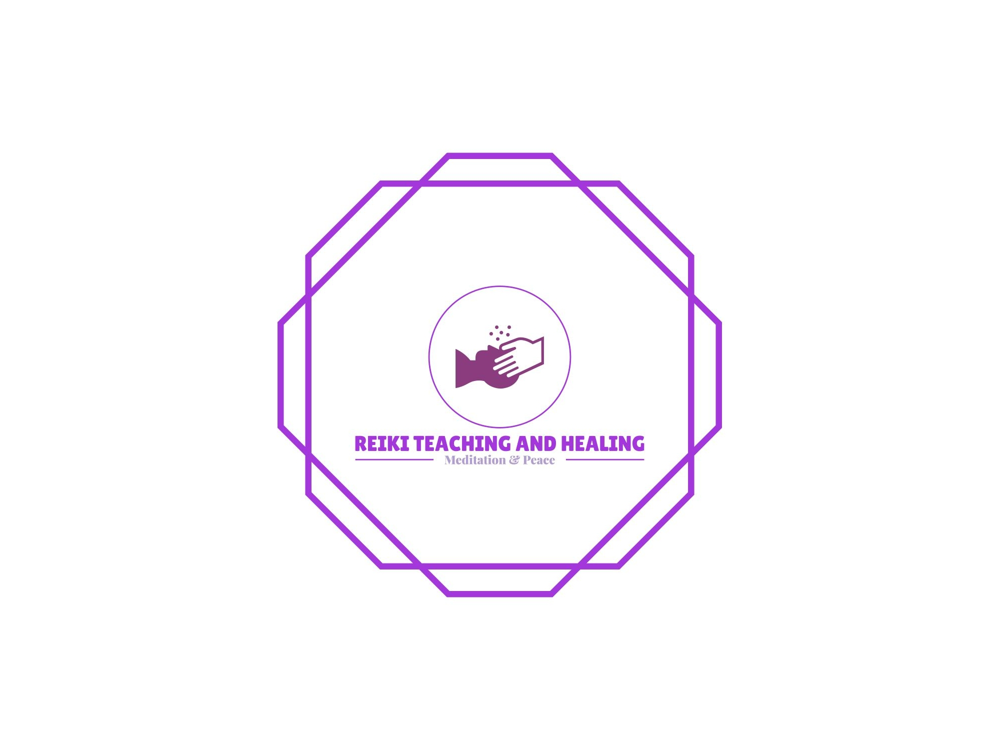
Sarika Khare
(reiki master)(vastu Expert)
(feng-shui remedy Expert)
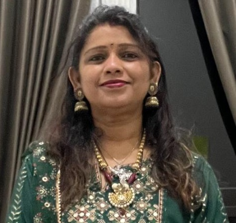
Reiki Healing
Reiki healing is a form of alternative therapy that aims to promote physical, emotional, and spiritual healing by using the practitioner's hands to channel universal life force energy into the client's body. It is based on the belief that disruptions in the flow of this energy can lead to imbalances in the body, mind, and spirit.Vastu Shastra
Vastu Shastra is an ancient Indian system of architecture and design that aims to create harmonious living spaces and environments. The term "Vastu" refers to the science of architecture, while "Shastra" means "treatise" or "doctrine". The principles of Vastu Shastra are based on the idea that the physical layout and design of a building can have a significant impact on the health, happiness, and success of its occupants.

Feng Shui
Feng Shui is a Chinese system of geomancy that is used to create harmonious living spaces and environments. The term "Feng Shui" means "wind and water," and it is based on the idea that the physical layout and design of a space can have a significant impact on the well-being and success of its occupants.Tarot Card Reading
Tarot card reading is a form of divination that uses a deck of 78 cards to gain insight into past, present, or future events or circumstances in a person's life. Each card in the deck has a specific meaning and symbolism, and the interpretation of the cards is based on the reader's intuition, knowledge of the cards, and the querent's question or situation. Tarot readings can provide insight into a wide range of topics, including love, career, finances, relationships, and personal growth.
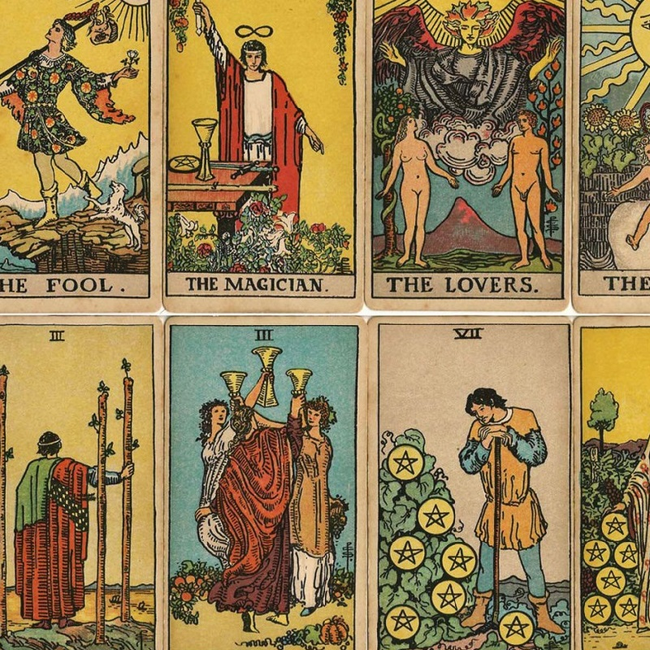
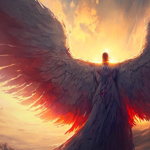
Angel Card Reading
Angel card reading is a form of divination that involves the use of a deck of cards that depict images of angels and other celestial beings. Each card has a specific message or guidance that is meant to provide insight, inspiration, and support to the person receiving the reading.Meditation
Meditation is a practice that involves training the mind to focus on a specific object, thought, or activity in order to achieve a state of relaxation and mental clarity. It is often used as a tool for reducing stress, improving emotional well-being, and enhancing overall health and wellness.
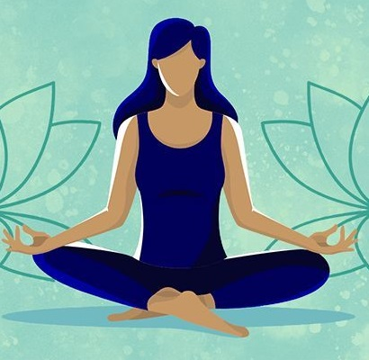
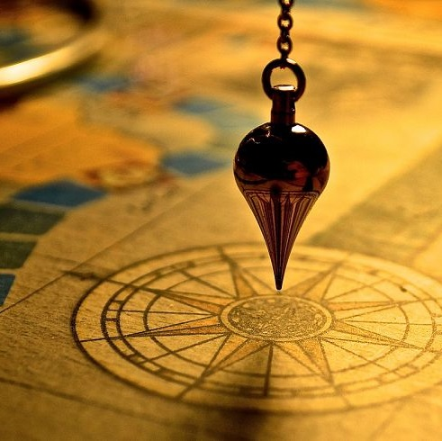
Pendulum Dowsing
Pendulum dowsing is an art of divination that can be used for accessing information that is not yet known. As a medium to connect to knowledge, wisdom and insight, you are able to use a pendulum and your physical body.Learning pendulum dowsing to tune into the guidance of the angels has many benefits. Pendulum dowsing will help you to tune into yes/no answers. It will help you to receive guidance while increasing your awareness of the subtle energies you are constantly interacting with and experiencing.Angel Therapy
Angel Therapy combines traditional psychological counseling with requests for assistance and guidance from the angels and Archangels. It is a powerful and effective way that release fears, it offers the guidance in your life and heals the body. The therapy tells about the angels who look out for us and helps us and also educate that on how to contact their own guardian Eagles for guidance in life. The Angels are the non-denominational beings always guiding you.
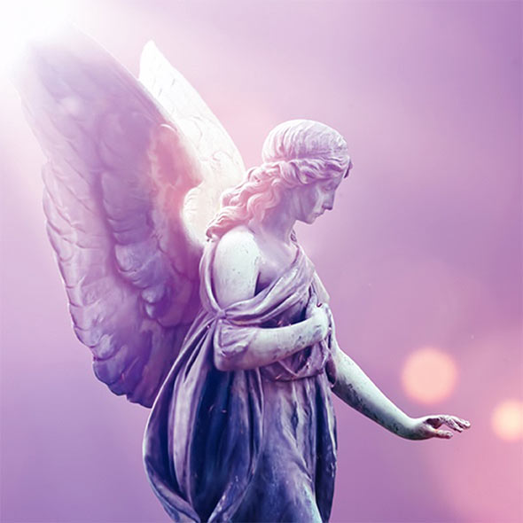
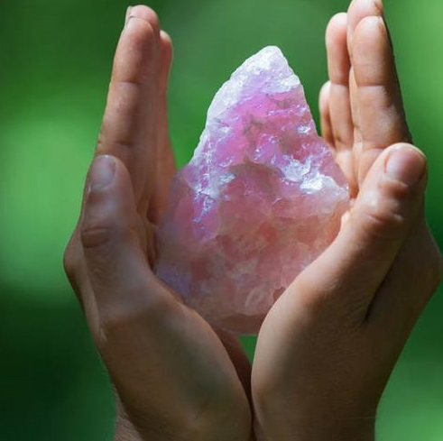
Crystal Healing
Crystal healing is an alternative healing practice that involves the use of crystals and gemstones to balance and align the energy centers or chakras in the body. The belief behind crystal healing is that each crystal has its unique vibration and energy, which can be used to promote physical, emotional, and spiritual healing.Chakra Balancing
Chakra balancing is a practice that aims to balance the energy flow in the body by working on the seven main chakras, which are believed to be the centers of energy in the body. These chakras are located along the spine and are associated with specific organs, emotions, and functions of the body.
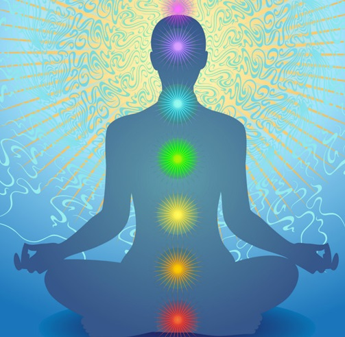
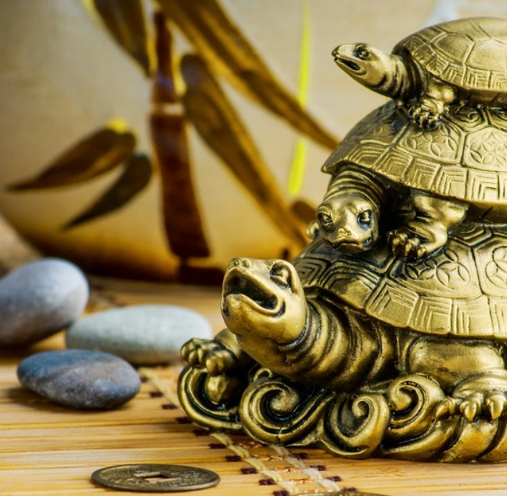
Charms & Oils
Charms are objects that are believed to have magical or spiritual properties and are often worn or carried as a form of protection or to attract certain energies or outcomes. Oils, on the other hand, are liquids infused with herbs, flowers, or other natural materials and are used for a variety of spiritual and magical purposes.Zibu Symbol Knowledge
Zibu symbols are a set of ancient, mystical symbols created by an artist named Debbie Zylstra Almstedt. These symbols are said to be based on an angelic language, and are believed to have healing and spiritual properties.
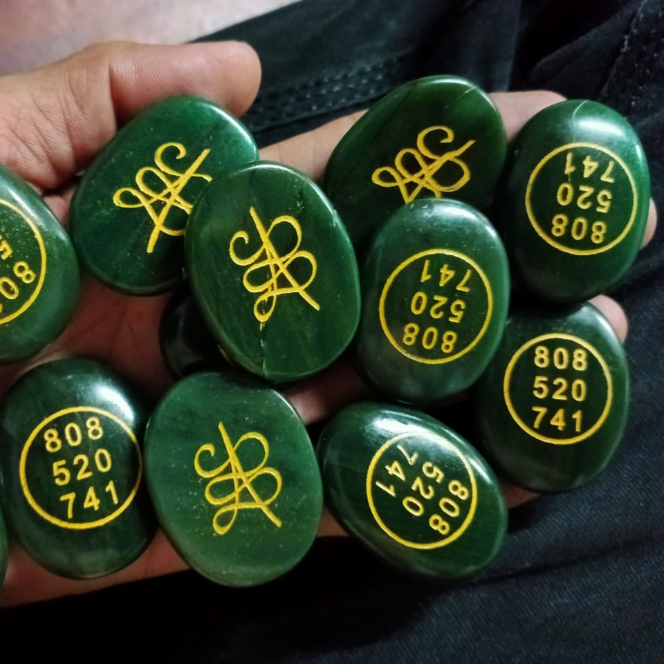